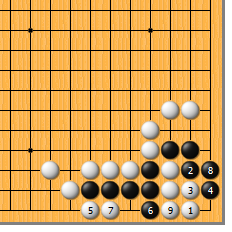
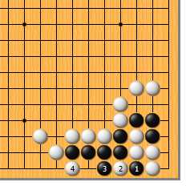
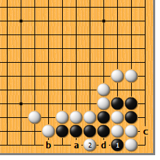
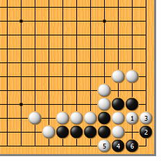
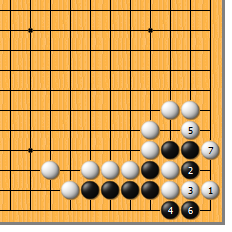
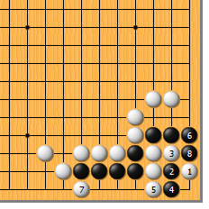
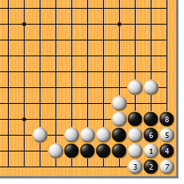

|  |  | |
| 图1 白1尖，正是急所。黑2如拐，白3团，黑4扳时，白5从容地从后面紧气。至黑8粘，白虽慢一气被吃，然而白9团，图穷匕现！
| 图2 前图的黑4如于本图1位扑，白要小心应对。白2如随手一提，黑3挡，白4扳，结果就会成劫。如此，白大失败。
| |
|
 |
 | |
图3 黑1扑时，最妙的应法是白2点！以下，黑a挡，白b立冷静，黑c打吃，白d提，黑1位提，白再d位打二还一，对杀白胜。
| 图4 白1挡，想净吃黑二子，想过头了。这里，黑有常用手筋，就是黑2的点（记住，别点错方向！）白3挡，黑4扳，黑必快一口气。白5如扑，黑6长即可，不用理它（千万别提）。 | |
|
 |
 | |
图5 白1的跳，也是比较容易想到的。黑2如冲，白3粘，表面上看是四气杀四气，然而由于角的特殊性，黑反而杀不过白。不过，借用《英雄》里的一句台词：“你把一个人想简单了！”
| 图6 白1跳时，黑2当然要拼死一挖！白3打吃，黑4长，撞紧白气，白5挡，黑6立，白7扳时，黑8打吃，黑正好快一气。黑2于4位点，白5位挡，黑再2位冲，结果也是一样的。
| |
|  | 您的高见 | |
图7 白1拐，也不是好手。黑2托，生出事端，白3以下至黑8，结果成劫。白3如于4位立，被黑5位尖顶，不行。黑2如于4位托，白2位立，就还原到了正解图，黑净死。 |